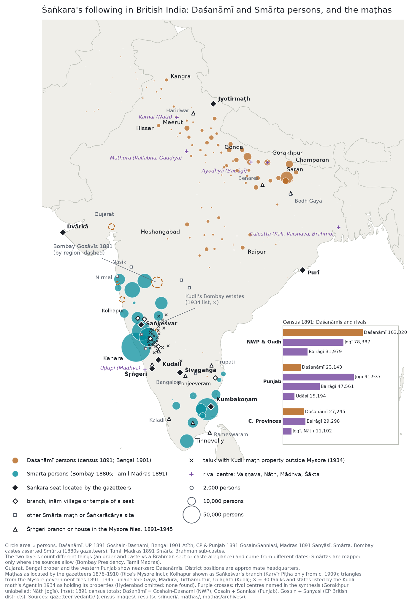

<title>Śaṅkara in the Gazetteers</title>
<meta name="claude:viewport-fit-sides" content="cover">
<link rel="stylesheet" href="https://fonts.googleapis.com/css2?family=Newsreader:ital,opsz,wght@0,6..72,400;0,6..72,600;1,6..72,400&family=Atkinson+Hyperlegible:wght@400;700&display=swap">
<style>
/* Layout: a single reading column (~68ch) with full-width tables; two "forms" colour-coded throughout —
   ochre for the Daśanāmī orders (their robe), slate-teal for Smārta householders under a pīṭha. */
:root{
  --bg:#f6f6f3; --surface:#ffffff; --fg:#1d2128; --muted:#5c6470; --rule:#d9dbd6;
  --ochre:#b5651d; --ochre-soft:#f4e3d2; --teal:#2f6f73; --teal-soft:#dcecec; --ink:#27406b;
  --serif:"Newsreader", "Iowan Old Style", Georgia, serif;
  --sans:"Atkinson Hyperlegible", "Segoe UI", system-ui, sans-serif;
}
@media (prefers-color-scheme: dark){ :root:not([data-theme="light"]){
  --bg:#14171c; --surface:#1b1f26; --fg:#e7e5df; --muted:#a3a9b2; --rule:#2e343d;
  --ochre:#e09a55; --ochre-soft:#3a2a1c; --teal:#73b9bc; --teal-soft:#1c3233; --ink:#9db6e3; color-scheme:dark }}
:root[data-theme="dark"]{
  --bg:#14171c; --surface:#1b1f26; --fg:#e7e5df; --muted:#a3a9b2; --rule:#2e343d;
  --ochre:#e09a55; --ochre-soft:#3a2a1c; --teal:#73b9bc; --teal-soft:#1c3233; --ink:#9db6e3; color-scheme:dark }
body{background:var(--bg);color:var(--fg);font-family:var(--serif);font-size:18px;line-height:1.6;
  padding-left:max(16px,env(safe-area-inset-left,0px));padding-right:max(16px,env(safe-area-inset-right,0px))}
main{max-width:760px;margin:0 auto;padding-block:48px 72px;display:flex;flex-direction:column;gap:44px}
header{display:flex;flex-direction:column;gap:14px}
.eyebrow,th,.chip,.src,dt{font-family:var(--sans);letter-spacing:.04em}
.eyebrow{font-size:13px;text-transform:uppercase;color:var(--muted)}
h1{font-size:clamp(34px,6vw,50px);line-height:1.08;margin:0;font-weight:600;text-wrap:balance}
h2{font-size:26px;line-height:1.2;margin:0 0 6px;font-weight:600;text-wrap:balance}
h3{font-size:19px;margin:0;font-weight:600}
p{margin:0}
.lede{font-size:21px}
section{display:flex;flex-direction:column;gap:14px}
.step{font-family:var(--sans);font-size:13px;text-transform:uppercase;letter-spacing:.06em;color:var(--muted);margin-bottom:-8px}
em.ochre{font-style:normal;color:var(--ochre);font-weight:600}
em.teal{font-style:normal;color:var(--teal);font-weight:600}
.terms{background:var(--surface);border:1px solid var(--rule);padding:16px 20px;margin:0;display:grid;grid-template-columns:150px 1fr;gap:10px 18px}
.terms dt{font-size:13px;font-weight:700;text-transform:uppercase;color:var(--muted);padding-top:3px}
.terms dd{margin:0;font-size:16.5px}
.answer{background:var(--surface);border:1px solid var(--rule);padding:18px 20px 18px 38px;margin:0;display:flex;flex-direction:column;gap:10px}
.forms{display:grid;grid-template-columns:1fr 1fr;gap:14px}
.form{background:var(--surface);border:1px solid var(--rule);border-top:4px solid var(--c);padding:16px 18px;display:flex;flex-direction:column;gap:8px;min-width:0}
.form.smarta{--c:var(--teal)} .form.dasnami{--c:var(--ochre)}
.form dl{margin:0;display:grid;grid-template-columns:auto 1fr;gap:4px 12px;font-size:16px}
.form dt{font-size:12px;text-transform:uppercase;color:var(--muted);padding-top:3px}
.form dd{margin:0}
figure.map{margin:0;background:#fff;border:1px solid var(--rule);padding:8px}
figure.map img{display:block;width:100%;height:auto}
figure.map figcaption{font-family:var(--sans);font-size:14px;line-height:1.5;color:var(--muted);padding:10px 6px 4px}
.tablewrap{overflow-x:auto;border:1px solid var(--rule);background:var(--surface)}
table{border-collapse:collapse;width:100%;font-size:15.5px;min-width:600px}
th,td{text-align:left;padding:9px 12px;border-bottom:1px solid var(--rule);vertical-align:top}
th{font-size:12px;text-transform:uppercase;color:var(--muted);font-weight:700;background:var(--bg)}
tr:last-child td{border-bottom:0}
tr.group td{background:var(--bg);font-family:var(--sans);font-size:12.5px;font-weight:700;text-transform:uppercase;letter-spacing:.05em;color:var(--muted);padding:6px 12px}
td.num{font-variant-numeric:tabular-nums}
.chip{display:inline-block;font-size:11.5px;font-weight:700;text-transform:uppercase;padding:2px 7px;border-radius:3px;white-space:nowrap}
.chip.d{background:var(--ochre-soft);color:var(--ochre)} .chip.s{background:var(--teal-soft);color:var(--teal)}
ol.list,ul.list{margin:0;padding-left:1.2em;display:flex;flex-direction:column;gap:8px}
.lineage{background:var(--surface);border:1px solid var(--rule);padding:14px 18px;font-family:var(--sans);font-size:15px;line-height:1.7;display:flex;flex-direction:column;gap:2px}
.lineage .t{color:var(--muted);font-variant-numeric:tabular-nums}
.dates{display:flex;flex-direction:column;border-left:2px solid var(--rule);margin-left:6px}
.date{display:grid;grid-template-columns:170px 1fr;gap:14px;padding:8px 0 8px 16px;position:relative}
.date::before{content:"";position:absolute;left:-6px;top:15px;width:10px;height:10px;border-radius:50%;background:var(--c,var(--ink))}
.date.d{--c:var(--ochre)} .date.s{--c:var(--teal)}
.date .when{font-family:var(--sans);font-size:14px;font-weight:700;color:var(--muted);font-variant-numeric:tabular-nums}
blockquote{margin:0;padding:2px 0 2px 16px;border-left:3px solid var(--teal);font-style:italic}
.src{font-size:13px;color:var(--muted);font-style:normal}
footer{font-family:var(--sans);font-size:13.5px;color:var(--muted);border-top:1px solid var(--rule);padding-top:16px;display:flex;flex-direction:column;gap:6px}
code{font-size:.85em}
@media (max-width:640px){ body{font-size:17px} .forms{grid-template-columns:1fr} .terms{grid-template-columns:1fr;gap:2px 0} .terms dd{margin-bottom:8px} .date{grid-template-columns:1fr;gap:2px} .answer{padding-left:30px} }
</style>

<main>
<header>
  <div class="eyebrow">Colonial gazetteers of British India, 1866–1918 · revised gazetteers, 1954–1989</div>
  <h1>Śaṅkara’s following in the British gazetteers</h1>
  <p class="lede">Śaṅkara is often presented as the teacher who unified Hinduism: four monasteries at the four corners of India, and Advaita as the mainstream of Hindu thought. Was allegiance to his tradition the dominant allegiance on the ground in the late nineteenth century, or a regional one? The district gazetteers, caste glossaries and census reports of six regions of British India allow an answer.</p>
</header>

<section>
  <h2>Terms</h2>
  <dl class="terms">
    <dt>Śaṅkarācārya</dt><dd>The title of the head of a monastery (maṭha) that claims descent from Śaṅkara.</dd>
    <dt>Seat (pīṭha)</dt><dd>Such a monastery, headed by a Śaṅkarācārya. The tradition names four: Śṛṅgeri in the south, Dvārkā in the west, Purī in the east and Jyotirmaṭh in the north. Others claim the rank, such as Kāñcī-Kumbakoṇam, or broke away from one of the four, as Saṅkeśvar and Kudli did from Śṛṅgeri.</dd>
    <dt>Smārta</dt><dd>Householders, mainly Brahmans, of the non-sectarian “smṛti” worship. Many acknowledge a Śaṅkarācārya as their guru.</dd>
    <dt>Daśanāmī</dt><dd>The renunciant orders of the “ten names” (Giri, Purī, Bhāratī …) traced to Śaṅkara. The gazetteers call them Gosāins, Atīths or Sannyāsīs, including their married offshoots.</dd>
  </dl>
</section>

<section>
  <h2>The answer</h2>
  <p><strong>Regional, not dominant.</strong> The tradition was present in some form in every region and carried the highest learned prestige. But it outnumbered the other traditions in only four areas.</p>
  <ol class="list answer">
    <li><strong>It took two different social forms in two halves of India.</strong> In the south and west it meant <em class="teal">Smārta householders</em> under a seat. In the north, east and centre it meant the <em class="ochre">Daśanāmī orders</em>, which owned land and were turning into a caste.</li>
    <li><strong>It outnumbered the other traditions on the Kanara coast, among Tamil Brahmans, in the eastern Ganges plain and in the Bombay Karnatak.</strong> Everywhere else a Vaiṣṇava, Liṅgāyat, Nāth or Sikh-linked tradition had the larger following and, usually, the larger estates.</li>
    <li><strong>The seats were weaker than the name suggests.</strong> Śṛṅgeri was a small principality in Mysore that depended on the Mysore state. The landed weight of the tradition in the west lay with two seats that had broken away from Śṛṅgeri, Saṅkeśvar and Kudli. The other three of the four seats barely appear in the gazetteers.</li>
    <li><strong>After independence the estates disappeared and the seats became more visible.</strong> The revised gazetteers of 1954–1989 no longer describe landholding Gosāins or castes under a Śaṅkarācārya, but they name the seats.</li>
  </ol>
</section>

<section>
  <div class="step">Evidence 1 · Who followed</div>
  <h2>Two forms of one tradition</h2>
  <div class="forms">
    <div class="form smarta">
      <h3><em class="teal">Smārta householders</em></h3>
      <dl>
        <dt>Where</dt><dd>South and west: the Bombay Deccan and Karnatak, Kanara, Madras</dd>
        <dt>Tie</dt><dd>A caste acknowledges a seat’s head as its guru, pays dues, takes disputes to him</dd>
        <dt>In the texts</dt><dd>“Their spiritual teacher is Shankarāchārya”, in caste-by-caste accounts</dd>
        <dt>Scale</dt><dd>Mostly under 8% of a district’s Hindus; Kanara 32–39%; Tamil Brahmans 48% (1891)</dd>
      </dl>
    </div>
    <div class="form dasnami">
      <h3><em class="ochre">Daśanāmī orders</em></h3>
      <dl>
        <dt>Where</dt><dd>North, east and centre: the UP, Bihar, Bengal, the Punjab, the Central Provinces</dd>
        <dt>Tie</dt><dd>Membership of an order: the ten names, maṭhs and akhāṛās, succession from guru to disciple</dd>
        <dt>In the texts</dt><dd>Gosāins, Atīths, Sannyāsīs: landholders, money-lenders, traders, formerly armed bands</dd>
        <dt>Scale</dt><dd>UP 103,320 (1891); Bihar Atīths 50,042 (1901); CP about 25,000 (1891); Punjab about 15,000</dd>
      </dl>
    </div>
  </div>
  <p>In both forms the allegiance was <strong>a matter of jurisdiction and property more than of doctrine</strong>. Śṛṅgeri’s agents heard caste disputes and collected dues in Kanara. The northern orders held villages, grants and banking houses (Mirzapur’s Gosaintola). The orders were also turning into a caste: Hunter defines Atīths as Daśanāmīs “who have not resigned the world”, Rose calls Gosāins “a semi-secularised offshoot”, and in Raipur a fighting akhāṛā had become a married zamindār family by 1909.</p>
  <blockquote>“Till last year (1881) they were followers of the Lingayat guide of Chitaldurg … But the pārupatyagār or agent of the Smārt Jagadguru of Shringeri has persuaded them to acknowledge him as their Teacher.”<br><span class="src">Konkan Kuṇbīs of Kanara. Bombay Gazetteer XV pt 1 (1883), p. 218</span></blockquote>
</section>

<section>
  <div class="step">Evidence 2 · Where</div>
  <h2>Region by region</h2>
  <p>The table lists every region from strongest to weakest. The last column names the traditions that held more followers or land there.</p>
  <div class="tablewrap"><table>
    <thead><tr><th>Region</th><th>Form</th><th>How strong, and the evidence</th><th>Who held more</th></tr></thead>
    <tbody>
      <tr class="group"><td colspan="4">Where Śaṅkara’s tradition outnumbered the others</td></tr>
      <tr><td>Kanara and South Canara coast</td><td><span class="chip s">Smārta</span></td><td>Strongest anywhere, and beyond Brahmans: fishermen, potters, carpenters and Marāṭhās under Śṛṅgeri’s guru; 32–39% of Kanara’s Hindus</td><td>Liṅgāyats; the Mādhvas of Uḍupi</td></tr>
      <tr><td>Tamil country</td><td><span class="chip s">Smārta</span></td><td>48% of Tamil Brahmans Smārta against 23% Śrīvaiṣṇava (1891); but no seat is tied to them</td><td>Śrīvaiṣṇavas (Chingleput 60%); non-Brahmin Śaiva maṭhs</td></tr>
      <tr><td>Eastern UP and Bihar</td><td><span class="chip d">Daśanāmī</span></td><td>The densest Daśanāmī country: Saran Atīths 26,753 (1901), Gonda 11,478 Gosāins (1891); Benares the one city where the tradition is institutionally present at every date</td><td>Rāmānandī Bairāgīs (Ayodhyā); Nāth Jogīs (Gorakhpur)</td></tr>
      <tr><td>Bombay Karnatak</td><td><span class="chip s">Smārta</span></td><td>Saṅkeśvar and Kudli hold dozens of inām villages; the one region where Śaṅkara houses are richer than their rivals</td><td>Liṅgāyats in numbers, but with smaller maṭhs</td></tr>
      <tr class="group"><td colspan="4">Where it was a minority</td></tr>
      <tr><td>Rohilkhand and Kumaon</td><td><span class="chip d">Daśanāmī</span></td><td>Dense locally (Kumaon 8,860; Bareilly 6,169)</td><td>Bairāgī akhāṛās (the Hardwar battle of 1760)</td></tr>
      <tr><td>Central Provinces</td><td><span class="chip d">Daśanāmī</span></td><td>Propertied, from Bhonsla grants; Gosain 24,796 (1891)</td><td>Bairāgīs, with more land and whole states; Kabīrpanthīs (99,260 in Bilaspur)</td></tr>
      <tr><td>Bombay Deccan</td><td><span class="chip s">Smārta</span></td><td>Mostly a Brahman matter: Kuṇbīs “cannot tell whether they are Smarts or Bhāgvats”</td><td>Bhāgavata Vaiṣṇavas; Mādhvas further south</td></tr>
      <tr><td>Punjab</td><td><span class="chip d">Daśanāmī</span></td><td>Thin, and absent in the west: Gosain and Sanniasi about 15,000 (1891)</td><td>Bairāgīs, Udāsīs and Nirmalas, Nāth Jogīs; their seats hold the land</td></tr>
      <tr><td>Bengal proper and Calcutta</td><td><span class="chip d">Daśanāmī</span></td><td>Sannyāsīs in tens per district; in Calcutta 3 Atīths and 13 Gosāins (1901)</td><td>Chaitanya Vaiṣṇavas in the tens of thousands; Kālī worship; the Brahmos</td></tr>
      <tr><td>Gujarat</td><td><span class="chip s">Smārta</span></td><td>Dvārkā has no stated following</td><td>Vallabhas about 647,000 and Svāminārāyaṇs about 288,000 (1901)</td></tr>
    </tbody>
  </table></div>
  <figure class="map">
    <a href="map/combined_map.png"></a>
    <figcaption>All six regions on one map; circle area is proportional to persons. <em class="ochre">Daśanāmīs</em> come from the census (UP, Punjab, CP and Madras 1891; Bengal 1901; Bombay 1881 by region only, dashed). <em class="teal">Smārtas</em> come from Bombay castes the gazetteers call Smārta and from Tamil Smārta Brahman sub-castes (1891); they are mapped only where the sources allow. Black diamonds mark the Śaṅkara seats, open diamonds their branches and inām villages, triangles Śṛṅgeri’s branch maṭhs in the Mysore files. Small crosses mark the 30 taluks and states where the Kudli maṭh held property in 1934. Purple crosses mark the rival seats named below. The inset compares the 1891 census totals for the Daśanāmīs, Jogīs, Bairāgīs and Udāsīs. Positions are approximate district headquarters.</figcaption>
  </figure>
  <p class="src">Why the tradition can look dominant: Advaita was the philosophy of the learned (“Vedantism … almost exclusively prevails” in Benares, 1909), the four-seat scheme made it pan-Indian in name, and “Smārta” and “Śaiva” were broad default labels. The 1901 Bombay census puts “Shaiv or Smart” at nearly 3,000,000, but that is a sect label, not allegiance to a seat.</p>
</section>

<section>
  <div class="step">Evidence 3 · How many</div>
  <h2>The census numbers, and the rivals in the same tables</h2>
  <p>No census measured allegiance to a seat. What the censuses did count were the Daśanāmī orders and the other ascetic orders, often in the same table. Each figure below was read from the page images and checked against the printed totals.</p>
  <div class="tablewrap"><table>
    <thead><tr><th>Census</th><th>Daśanāmī</th><th>Rival orders in the same table</th></tr></thead>
    <tbody>
      <tr><td>NWP and Oudh 1891</td><td class="num">103,320</td><td class="num">Jogī 78,387; Bairāgī 31,979</td></tr>
      <tr><td>Punjab 1891 (British Territory)</td><td class="num">Gosain 9,903; Sanniasi 5,163</td><td class="num">“Jogi &amp; Rawal” 75,469 (36,718 of them Muslim); Bairāgī 34,102; Udāsī 9,459</td></tr>
      <tr><td>Central Provinces 1891</td><td class="num">Gosain 24,796</td><td class="num">Bairāgī 29,298; Jogī 6,094; Nāth 5,008</td></tr>
      <tr><td>Bengal 1901</td><td class="num">Atīth 50,042</td><td>“Gosain” 29,534, a mixed column, largely Vaiṣṇava</td></tr>
      <tr><td>Tamil Madras 1891</td><td class="num">Smārta 47.6% of Brahmans</td><td class="num">Aiyaṅgār (Śrīvaiṣṇava) 22.7%</td></tr>
    </tbody>
  </table></div>
  <ul class="list">
    <li><strong>The Bairāgīs outnumber the Daśanāmīs</strong> in the Punjab and the Central Provinces. In the whole Punjab province, native states included, the Udāsīs (15,194) also exceed the Gosains (13,344).</li>
    <li><strong>“Jogī” is the largest heading in the north, but it is not a body of Nāth ascetics.</strong> In the Punjab about half of it was Muslim. In the UP the gazetteers describe Jogīs more often as a householder caste (see the companion study, <i>Yogis in the Gazetteers</i>).</li>
    <li><strong>The headings are loose and include householders on both sides.</strong> The 1891 NWP report says enumerators used “Goshain, Bairagi, Jogi, Saniyasi” interchangeably. In 1891 Azamgarh returns no Gosāins but 5,764 Jogīs, where in 1881 it had 2,186 Gosāins and 3,456 Atīths.</li>
    <li><strong>The Tamil figure needed reconstruction.</strong> The census row labelled “Smarta” has only 7,021 persons, because Tamil Smārtas were returned under sub-caste names; the 48% counts the sub-castes Thurston lists as Smārta.</li>
  </ul>
  <p>Where the gazetteers describe the rival houses’ wealth, it matches or exceeds the Śaṅkara houses’:</p>
  <div class="tablewrap"><table>
    <thead><tr><th>Rival seat</th><th>Tradition</th><th>What the texts give it</th><th>Nearest Śaṅkara house</th></tr></thead>
    <tbody>
      <tr><td>Tiruvāvaḍuturai (Tanjore)</td><td>Tamil Śaiva</td><td class="num">about 29,000 acres; Rs 2 lakhs a year</td><td class="num">Kumbakoṇam maṭh: Rs 14,000 a year</td></tr>
      <tr><td>Nandgaon; Lormi (CP)</td><td>Bairāgī</td><td class="num">a state of 560 villages; 104 villages</td><td class="num">Dharampuri, the largest Gosāin estate: 40 villages</td></tr>
      <tr><td>Kawardha (CP)</td><td>Kabīrpanthī</td><td class="num">lay following claimed at 500,000</td><td>none in the CP</td></tr>
      <tr><td>Tilla; Bohar; Dera Baba Nanak (Punjab)</td><td>Nāth; Nāth; Udāsī</td><td>Akbar’s sanad; land; a jāgīr of Rs 2,602</td><td>none in the Punjab</td></tr>
      <tr><td>Vadtal (Gujarat)</td><td>Svāminārāyaṇa</td><td class="num">287,687 followers (1901)</td><td>Dvārkā: no stated following</td></tr>
      <tr><td>Chitradurga (Mysore)</td><td>Liṅgāyat</td><td>supreme Liṅgāyat guru; lost the Konkan Kuṇbīs to Śṛṅgeri in 1881</td><td>Śṛṅgeri</td></tr>
    </tbody>
  </table></div>
  <p>The exception is the Bombay Karnatak. There Saṅkeśvar (30 inām villages, Rs 30,000 a year) and Kudli (Rs 35,047 in 1933) are richer than any Liṅgāyat maṭh around them; the largest stated income among those is Kaneri’s Rs 1,500.</p>
</section>

<section>
  <div class="step">Evidence 4 · The seats</div>
  <h2>What the seats actually held</h2>
  <p>If allegiance to Śaṅkara was organised anywhere, it should show in the seats: their buildings, estates, agents and branches. We searched every volume for each seat.</p>
  <div class="tablewrap"><table>
    <thead><tr><th>Seat</th><th>What the colonial gazetteers show</th></tr></thead>
    <tbody>
      <tr class="group"><td colspan="2">The four seats of the tradition</td></tr>
      <tr><td>Śṛṅgeri (Mysore)</td><td>A landed estate in Mysore with one named branch. No maṭh, estate or agent in Bombay or Madras, although Kanara’s castes call its head their guru.</td></tr>
      <tr><td>Dvārkā (Gujarat)</td><td>One line: the “Shārada Pīth”, endowed by the Gaekwar. No following described.</td></tr>
      <tr><td>Purī (Orissa)</td><td>Absent in 1877; in 1908 an unnamed “Sankaracharya” maṭh with a library.</td></tr>
      <tr><td>Jyotirmaṭh (Garhwal)</td><td>Only in lists of the four seats. No Śaṅkarācārya named.</td></tr>
      <tr class="group"><td colspan="2">Other seats</td></tr>
      <tr><td>Kumbakoṇam (Tanjore)</td><td>An endowed maṭh (Rs 14,000 a year, three temples) tied to no following. Kāñcī appears only as where Śaṅkara once founded a maṭh.</td></tr>
      <tr><td>Saṅkeśvar (Belgaum)</td><td>The one network described in detail: thirty inām villages in seven jurisdictions, Rs 30,000 a year, branch maṭhs at Kolhapur and elsewhere, a svāmī who tours to collect dues.</td></tr>
      <tr><td>Kudli (Shimoga, Mysore)</td><td>Called “Kudalgi” in Bombay; holds villages and temple rights in Dharwar.</td></tr>
    </tbody>
  </table></div>

  <h3>Śṛṅgeri and its two offshoots</h3>
  <p>Śṛṅgeri matters because it is the seat the tradition ranks first in the south, and the one the Kanara castes named as their guru. The gazetteers and 338 Mysore government files show what it actually was.</p>
  <ul class="list">
    <li><strong>A small principality in Mysore.</strong> Its head was “proprietor of the surrounding tract”: a jāgīr of over 220 villages, about Rs 50,000 a year plus a monthly grant from the Mysore state. It was chronically in debt, and the Mysore state consecrated its head in 1912 and managed its property from 1936 to 1959.</li>
    <li><strong>Reach without estates.</strong> Outside Mysore it had branch maṭhs at pilgrimage centres (Rameswaram, Kaladi, Tirupati, Nasik, Haridwar, Benares), some grants and mortgages in the Tamil districts, and tours. It held no land among the Kanara castes who called it their guru. Its jurisdiction there worked through touring agents and caste headmen.</li>
  </ul>
  <p>The land in the west belonged to two seats that had broken away from Śṛṅgeri:</p>
  <div class="lineage">
    <span><b>Śṛṅgeri</b> <span class="t">(Mysore)</span></span>
    <span>├ <b>Saṅkeśvar</b> <span class="t">c. 1570: Shankarbhāratī leaves Śṛṅgeri and is refused re-entry (Belgaum 1884)</span></span>
    <span>│ &nbsp;&nbsp;└ <b>Karvīr</b> <span class="t">Kolhapur, a branch of Saṅkeśvar until it became a separate seat about 1909</span></span>
    <span>└ <b>Kudli</b> <span class="t">separated 1656–57 (Dewan of Mysore, 1895); independence upheld by the Mysore court, 1847–49</span></span>
  </div>
  <p>Saṅkeśvar’s thirty inām villages lay mainly in Kolhapur, Belgaum and the Maratha states. Kudli sat in Mysore, but most of its income came from Bombay: in 1934 its agent listed property in 30 taluks and states, mainly in Dharwar and Bijapur (the small crosses on the map). Between them the two offshoots held the Bombay Karnatak, the only region where Śaṅkara houses out-endowed their rivals. Bombay treated their svāmīs as equals: one officer asked for Kudli’s svāmī to be exempted from the Arms Act like his “brother Swami of Sankeshwar”.</p>
  <p class="src">Details: <code>sringeri/README.md</code>, <code>mathas/README.md</code>, <code>mathas/archives/README.md</code>.</p>
</section>

<section>
  <div class="step">Evidence 5 · Change</div>
  <h2>Three dates: 1870s, 1900s, after independence</h2>
  <p>The gazetteers come in three series: the first compilations (1866–1890), the district gazetteers of 1900–1918, and the revised state gazetteers of 1954–1989. Read in sequence, they show the tradition losing its land and its castes, while its seats gained in visibility.</p>
  <div class="dates">
    <div class="date s"><div class="when">Kanara, 1881</div><div>Śṛṅgeri’s agent wins the Konkan Kuṇbīs from a Liṅgāyat guru: the caste jurisdiction is still expanding.</div></div>
    <div class="date d"><div class="when">Saran, 1872 → 1901</div><div>Atīths grow from 18,612 to 26,753.</div></div>
    <div class="date d"><div class="when">Gonda, 1869 → 1905</div><div>Villages held by a Gosāin mahant fall from 89 to 34.</div></div>
    <div class="date d"><div class="when">CP, 1800s → 1900s</div><div>Maratha grants to Nāgā bands end as married family estates.</div></div>
    <div class="date d"><div class="when">Bodh Gayā, 1877 → 1906</div><div>An anonymous “convent of Sanyāsīs” becomes a named Giri maṭh with a Mughal grant, upheld by the High Court.</div></div>
    <div class="date s"><div class="when">Kolhapur, c. 1909</div><div>Saṅkeśvar’s Kolhapur branch breaks away and becomes the Karvīr seat.</div></div>
    <div class="date s"><div class="when">Śṛṅgeri, 1912; 1936–59</div><div>The Mysore state consecrates a new head, then manages the maṭh for 23 years.</div></div>
    <div class="date d"><div class="when">UP and Bihar, 1960s–80s</div><div>Gosāin estates and mahants vanish from the revised volumes; Sitapur and Gaya name zamindari abolition as the cause.</div></div>
    <div class="date s"><div class="when">South Kanara, 1973</div><div>Śṛṅgeri’s jurisdiction over fishermen and cultivators is no longer described.</div></div>
    <div class="date s"><div class="when">Purī, 1977</div><div>The unnamed maṭh of 1908 is now the Govardhana seat; the Kāñcī Kāmakoṭi seat founds an ashram there.</div></div>
  </div>
  <p>The revised gazetteers (37 checked) show what survived independence:</p>
  <ul class="list">
    <li><strong>The estates did not.</strong> Landholding mahants and the Bihar Atīth caste are mostly not mentioned at all. Remaining maṭhs become trusts under the endowment acts of 1950–51.</li>
    <li><strong>Ceremony and institutions did.</strong> The akhāṛās still lead the melas at Allahabad, Varanasi, Hardwar and Nasik. Tārakeśvar became a public endowment after its 1924 court case.</li>
    <li><strong>The seats became visible, the castes under them did not.</strong> Karvīr and Govardhana are named, but no non-Brahmin caste is any longer described as under a Śaṅkarācārya. “Smārta” becomes simply a Brahman sect.</li>
    <li><strong>A new Advaita order appears in their place:</strong> the Ramakrishna Mission, which took Daśanāmī sannyāsa but stands outside the old seats.</li>
  </ul>
</section>

<section>
  <h2>Reading the sources with care</h2>
  <ul class="list">
    <li><strong>The compilers made the map.</strong> Volumes that asked every caste about its guru (Kanara, Dharwar) show strong Smārta allegiance; neighbours that did not ask show almost none. The 1872 census filed similar Marathi populations as 99.7% “Śaiva” in Ratnagiri and 88% “unsectarian” in Nasik.</li>
    <li><strong>“Gosāin” is a trap.</strong> In Bengal, Gujarat, Brindaban and the western Punjab it means a Vaiṣṇava guru lineage. Every count was classified by context.</li>
    <li><strong>The census headings are loose</strong> and include householders, as above. No census counts lay followers of a seat.</li>
    <li><strong>The revised gazetteers changed genre.</strong> Several reprint colonial text, and they care more about temples and trusts than about castes, so part of what vanishes after 1954 is a change of interest, not of fact.</li>
  </ul>
</section>

<footer>
  <div>Method: OCR text of about 300 colonial volumes and 37 revised gazetteers from the Internet Archive. Statements about sects, orders and maṭhs were coded caste by caste and district by district, each with a verbatim quotation and page; spot checks found 29–30 of 30 quotations word for word in each region. Census caste tables were read from page images and reconciled with the printed totals. 338 Karnataka State Archives files on Śṛṅgeri and Kudli were coded.</div>
  <div>Repository: <code>research/gazetteer-vedanta/</code>. Regional reports in each folder; seats in <code>sringeri/</code> and <code>mathas/</code>; rivals in <code>rivals/</code>; census tables in <code>census-images/</code>. Places finder: <code>map/places_map.html</code>.</div>
</footer>
</main>
